第15章：结构、类和协议¶
现在是时候为你的应用程序建立数据模型了，这样你就有一些数据可以在你的应用程序的视图上显示。
数据模型需要的四个功能经常被称为CRUD。也就是创建、读取、更新、删除。其中最简单的通常是读取，所以在这一章中，你将首先创建数据存储，然后构建读取存储并显示数据的视图。然后，你将学习如何更新数据和存储数据，最后，如何删除数据。这就剩下创建了，你将在后面一章中学习如何添加带有照片和文字的新卡片。
启动项目的变化¶
上一章的挑战项目和本章的启动项目之间有一些不同之处：
Operators.swift：包含一个新的操作符，用于将CGSize乘以一个标量。Preview Assets.xcassets：包含三个可爱的刺猬，来自http://pexels.com。PreviewData.swift：包含你将使用的样本数据，直到你能够创建和保存数据。TextExtensions.swift：包含一个新的视图修改器，用于缩放文本。
➤ 如果您继续使用自己的项目，请确保将这些文件复制到您的项目中。
数据结构¶
再看一下餐巾纸背面的草图：

即使有了这个粗略的草图，你也可以对如何塑造你的数据有一个概念。
你需要一个顶层的数据存储，它将保存所有卡片的数组。每张卡片将有一个元素列表，这些元素可以是图像或文本。
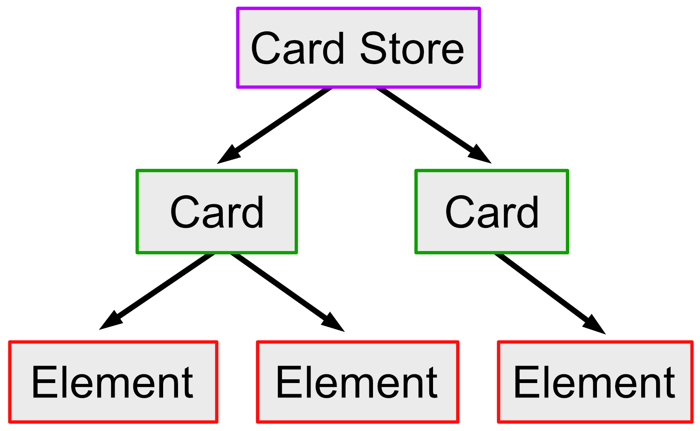
但你不想把自己限制在图像或文本上，因为你可能在未来为你的应用程序添加新的功能。你现在创建的任何数据模型都应该是可扩展的，也就是尽可能的灵活，以允许未来的功能。
值和引用类型¶
你将在本节中学习的技能。值和引用类型之间的区别
在创建数据模型之前，你需要决定使用什么类型来存储你的数据。你应该使用结构还是类？
一个Swift数据类型要么是值类型，要么是引用类型。值类型，如结构和枚举，包含数据，而引用类型，如类，包含数据的引用。
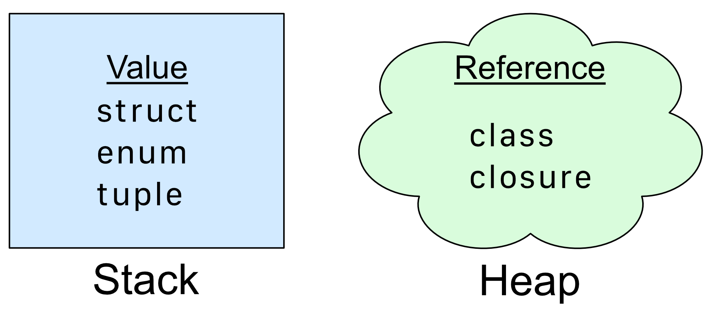
在运行时，你的应用程序将属性实例化，并将它们分配到独立的内存区域，称为堆栈和堆。值类型放在堆栈中，由CPU管理和优化，所以它非常快速和高效。你可以不计成本地实例化结构、枚举和图元。然而，堆是更加动态的，允许应用程序分配和取消分配内存区域，同时保持引用计数。这使得引用类型的效率降低。当你实例化一个类时，那块数据应该会坚持一段时间。
Swift Dive: Structure vs class¶
本节中你将学习的技能。如何使用结构和类
在代码中初始化类和结构时，它们看起来非常相似。比如说：
let iAmAStruct = AStruct()
let iAmAClass = AClass()
这里的重要区别是，iAmAStruct包含不可变的数据，而iAmAClass包含对数据的不可变的引用。数据本身仍然是可变的，你可以改变它。
iAmAStruct.number = 10 // compile error
iAmAClass.number = 10 // no error - `number` will update to 10
当你分配价值类型时，例如CGPoint，你会做一个副本。比如说：
let pointA = CGPoint(x: 10, y: 20)
var pointB = pointA // make a copy
pointB.x = 20 // pointA.x is still 10
pointA和pointB是两个不同的对象。
通过引用类型，你可以访问相同的数据。比如说：
let iAmAClass = AClass()
let iAmAClassToo = iAmAClass
iAmAClassToo.number = 20 // this updates iAmAClass
print(iAmAClass.number) // prints 20
Swift对堆中创建的AClass对象的引用数量进行计数。这里的引用计数将是两个，Swift不会在对象的引用计数为零时才去分配它。
像这样改变数据，对于不知情的开发者来说，可能是错误的来源。Swift的原则之一是防止意外的错误，如果你偏爱值类型而不是引用类型，你最终会减少这些意外。在这个应用程序中，你将尽可能地支持结构和枚举而不是类。
创建卡片商店¶
在本节中你将学到的技能。何时使用类和结构
回到决定如何存储数据的复杂问题上，你需要在结构和类之间做出选择。
一般来说，当你持有一个简单的数据，如Card或CardElement，那些是轻量级的对象，你不会永远需要。你会把它们变成一个结构。然而，当你持有一个你将在整个应用程序中使用的数据存储时，这将是一个很好的类的候选人。此外，如果你的数据有发布者属性，它必须符合ObservableObject，其中的要求是，数据类型是一个类。
现在你将开始创建你的数据模型，从数据层次结构的底部开始，用元素。
➤ 在模型组中，创建一个名为CardElement.swift的新Swift文件。
➤ 将代码替换为：
import SwiftUI
struct CardElement {
}
这是你要描述卡片元素的文件。你很快就会回到这里来定义你要持有的数据。
➤ 创建一个名为Card.swift的新Swift文件，并将代码替换为：
import SwiftUI
struct Card: Identifiable {
let id = UUID()
var backgroundColor: Color = .yellow
var elements: [CardElement] = []
}
你将Card设置为符合Identifiable，具有协议要求的属性id。之后，你可以使用这个唯一的id来定位卡片，并在卡片中进行迭代。
你还要为卡片保留一个背景颜色，以及一个elements数组，用于放置在卡片上的所有图片和文字。
➤ 创建一个名为CardStore.swift的新Swift文件并替换代码：
import SwiftUI
class CardStore: ObservableObject {
@Published var cards: [Card] = []
}
CardStore是你的主要数据存储和你的单一真理来源。因此，你要确保它在应用程序的持续时间内一直存在。因此，它不是一个轻量级的对象，而你选择让它成为一个类。
让它成为一个类还有第二个原因。协议ObservableObject要求任何符合它的类型都是一个类。
ObservableObject是Combine框架的一部分。一个符合ObservableObject的类可以在其中发布属性。当这些属性发生任何变化时，任何使用这些属性的视图都会自动刷新。因此，当发布的数组中的任何卡片发生变化时，视图将作出反应。
你现在已经建立了一个数据模型，SwiftUI可以观察并写入该模型。不过，在卡片元素方面有一个困难。这些元素可以是图像或文本。
类的继承¶
在本节中你将学到的技能：类的继承；组合与继承的关系
你可能在Swift或其他语言中遇到过面向对象编程（OOP）。这就是你有一个基础对象，其他的类从这个基础对象派生，或继承。Swift类允许继承。而Swift结构则不允许。
你可以用这种方式设置你的卡片元素数据：
class CardElement {
var transform: Transform
}
class ImageElement: CardElement {
var image: Image?
}
class TextElement: CardElement {
var text: String?
}
这里你有一个基类CardElement和两个继承自CardElement的子类。ImageElement和TextElement都继承了transform属性，但每种类型都有自己独立的相关数据。
然而，正如前面所讨论的，像卡片元素这样的轻量级对象应该是价值类型，而不是类。
组成与继承¶
有了继承，你就有了紧密耦合的对象。任何一个CardElement类的子类都会自动有一个transform属性，不管你是否想要。
你可能会在未来的版本中决定要求某些元素有一个颜色。通过继承，你可以在基类中加入color，但是你会为那些不使用颜色的元素保留多余的数据。
另一种情况是使用协议的组合，你只向一个对象添加相关的属性。这意味着你可以在结构中保存你的数据。
这张图显示了一个CardElement协议与ImageElement和TextElement结构。它还显示了未来可能的扩展，如果你想包括一个新的ColorElement。这在继承的情况下会更难。
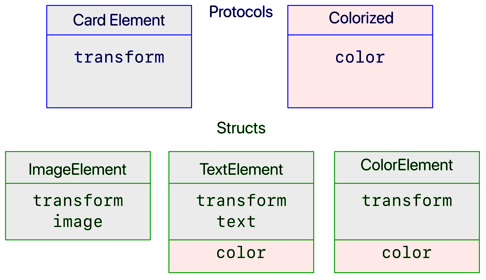
传统上，继承被认为是一种"是"的关系，而组合是一种"有"的关系。但是，你应该尽可能地避免紧密耦合的对象，而组合给了你更多的设计自由。
Protocols¶
本节将学习的技能：创建协议；符合协议的结构；协议方法
到目前为止，你已经使用了几个协议，如View和Identifiable，可能还对它们的实际作用感到有点神秘。
协议就像一个合同。你创建了一个协议，定义了对一个结构、一个类或一个枚举的要求。这些要求可能包括属性，以及它们是只读的还是读写的。协议还可以定义一个方法列表，任何采用该协议的类型都必须包括这些方法。协议不能保存数据，它们只是一个蓝图或模板。你创建结构或类来保存数据，它们反过来又符合协议。
View是你用得最多的协议。它有一个必要的属性body。你所创建的每个视图都包含body，如果你不提供一个，你会得到一个编译错误。
Identifiable是另一个你已经使用过的协议。id是一个必需的属性，所以每次你符合Identifiable时，你都创建了一个id属性，保证是唯一的。一般来说，你使用一个普遍唯一的标识符，或UUID，来提供一个唯一的128位数字。
在你的应用程序中，每个卡元素都会有一个transform，所以你要把CardElement改成一个协议，要求任何采用它的结构都有一个transform属性。
➤ 打开CardElement.swift，将结构改为：
protocol CardElement {
var id: UUID { get }
var transform: Transform { get set }
}
在这里你创建了一个CardElement结构的蓝图。每个卡片元素类型将有一个id和一个transform。id是只读的，transform是可读可写的。
➤ 在与CardElement相同的文件中，创建图像元素：
struct ImageElement: CardElement {
let id = UUID()
var transform = Transform()
var image: Image
}
ImageElement符合CardElement的要求，有id和transform。它也持有一个图像。
➤ 在图像元素之后创建文本元素：
struct TextElement: CardElement {
let id = UUID()
var transform = Transform()
var text = ""
var textColor = Color.black
var textFont = "San Fransisco"
}
TextElement也符合CardElement，并持有一个文本、文本颜色和字体的字符串。
有了协议，你就为设计提供了未来保障。如果你以后想增加一个纯色的卡片元素，你可以简单地创建一个符合CardElement的新结构ColorElement。
Card持有一个CardElement的数组。Card并不关心它的elements数组中持有什么类型的CardElement，所以很容易增加新的元素类型。
创建一个默认的协议方法¶
协议蓝图的一部分可能是要求符合要求的类型实现一个方法。例如，这个协议要求所有符合它的类型都实现find()。
protocol Findable {
func find()
}
但有时你想要一个默认的方法，在所有符合要求的类型中都是一样的。例如，在你的应用程序中，一个卡片将持有一个卡片元素的数组。后来，你想找到某个特定卡片元素的索引。
这方面的代码将是：
let index = card.elements.firstIndex { $0.id == element.id }
这是很难读懂的，你必须记住关闭的语法。相反，你可以在CardElement中创建一个新方法来代替它。
➤ 在CardElement.swift中，在协议声明下，在扩展中添加一个新方法：
extension CardElement {
func index(in array: [CardElement]) -> Int? {
array.firstIndex { $0.id == id }
}
}
这个方法接收一个CardElement的数组，并传回该元素的索引。如果该元素不存在，它会传回可选的Int中的nil。你要使用它的方法是：
let index = element.index(in: card.elements)
这比之前的代码要容易读得多，复杂的闭合语法在index(in:)中被抽象出来了。任何符合CardElement的类型都可以使用这个方法。
现在你已经实现了你的视图和数据模型，你已经达到了令人兴奋的地步，即在视图中显示数据。你的应用程序不允许你添加任何数据，所以你的启动项目有一些预览数据可以使用，直到你可以添加自己的数据。
预览数据¶
你将在本节中学习的技能：使用预览数据
➤ 在预览内容组中，看一下PreviewData.swift，删除注释标签//。如果这段代码没有注释，在你建立数据模型之前，它就不会被编译。
这里有五张卡。第一张卡片使用由四个元素组成的数组，这些元素是图片和文本的混合体。你将使用这些数据来测试新的视图。卡片元素在iPhone 12 Pro上的定位是纵向的。由于它们是硬编码的，如果你在横向模式或较小的设备上运行该应用程序，一些元素将离开屏幕。之后，你的卡片会有一个固定的尺寸，元素会按比例调整以适应可用的空间。
➤ 打开CardStore.swift，为CardStore添加一个初始化器：
init(defaultData: Bool = false) {
if defaultData {
cards = initialCards
}
}
当你第一次实例化CardStore时，初始化器会在defaultData为true时加载预览数据。
以后，当你可以从文件中保存和加载卡片时，你将会更新它以使用保存的卡片。目前，你将使用预览数据。
你需要实例化CardStore，最好在应用程序开始时就这样做。
➤ 打开CardsApp.swift，给CardsApp添加一个新属性：
@StateObject var store = CardStore(defaultData: true)
你使用@StateObject来确保数据存储在整个应用中持续存在。
➤ 向CardsView()添加一个修改器，这样就可以通过环境来处理数据存储：
.environmentObject(store)
➤ 打开CardsView.swift，将新的环境对象添加到CardsView中：
@EnvironmentObject var store: CardStore
每当你创建一个环境对象属性时，你应该确保SwiftUI预览将其实例化。如果你不这样做，你的预览将神秘地崩溃，没有错误信息。
➤ 在previews中，为CardsView添加一个修改器。
.environmentObject(CardStore(defaultData: true))
列出卡片¶
本节将学习的技能：didSet属性观察者；可变性
➤ 打开CardsListView.swift，再次将数据存储添加到CardsListView：
@EnvironmentObject var store: CardStore
➤ 在previews中，为CardsListView添加一个修改器：
.environmentObject(CardStore(defaultData: true))
现在可以用CardsListView中的预览数据访问数据存储。
➤ 将ForEach(0..<10) { _ in改为：
ForEach(store.cards) { card in
在这里你遍历store.card。记住，这种格式的ForEach要求Card是Identifiable。
➤ 打开CardThumbnailView.swift，为CardThumbnailView添加一个新的属性：
let card: Card
这里不需要card是可变的，因为你只需要从它那里读出卡片的缩略图的背景颜色。
➤ 将.foregroundColor(.random())替换为：
.foregroundColor(card.backgroundColor)
缩略图使用卡片的背景色，而不是随机的颜色。
➤ 更新预览，以使用所提供的预览数据中的第一个卡片：
struct CardThumbnailView_Previews: PreviewProvider {
static var previews: some View {
CardThumbnailView(card: initialCards[0])
}
}
➤ 回到CardsListView中，将CardThumbnailView()改为：
CardThumbnailView(card: card)
你把当前的卡片传递给缩略图视图。
➤ 预览视图并检查滚动的卡片缩略图是否使用预览数据中的背景颜色：
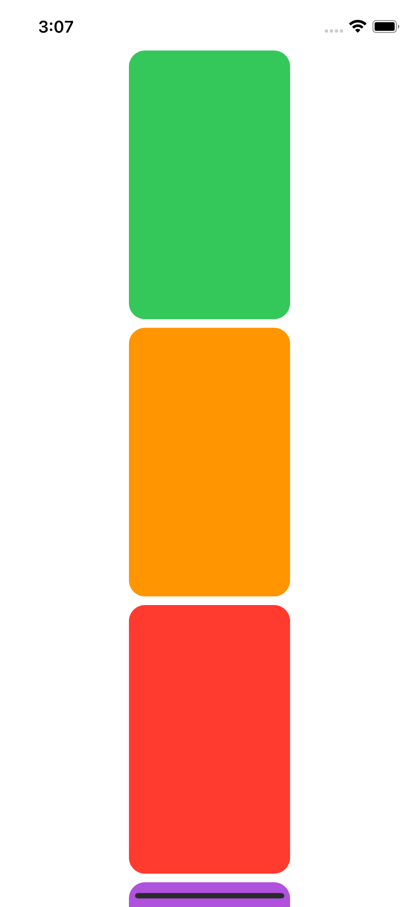
选择一个卡片¶
当你点击一张卡片时，你切换了viewState.showAllCards，父视图CardsView应该使用所选卡片的数据来显示SingleCardView。与其为所选卡片传递绑定，不如在ViewState中保留它。
➤ 打开ViewState.swift，给ViewState添加新属性：
var selectedCard: Card?
任何可以访问环境对象ViewState的视图现在都可以找出当前选择的卡片。
➤ 在CardsListView.swift中，将此添加到 onTapGesture(count:perform:)：
viewState.selectedCard = card
didSet观察者¶
当然，当你列出所有卡片，并且当前没有卡片被选中时，viewState.selectedCard应该是nil。你用viewState.showAllCards来控制这个列表的显示。你可以去寻找所有你设置showAllCards为真的地方，但你可以使用属性观察器didSet来代替。
➤ 打开ViewState.swift，将@Published var showAllCards = true替换为：
@Published var showAllCards = true {
didSet {
if showAllCards {
selectedCard = nil
}
}
}
每当你给showAllCards分配一个新的值时，didSet会观察到这个变化。当你把showAllCards设置为true并把selectedCard设置为nil时，你就会采取行动。如果你需要在didSet闭包中访问showAllCards的前一个值，你可以使用oldValue。
Swift
还有一个叫做willSet的属性观察者。这个观察器在改变之前触发，而didSet在改变之后触发。在willSet闭包中，属性包含旧值，但你可以访问newValue，它包含闭包后属性的新值。
显示单卡¶
现在你可以把选中的卡片传递给单卡视图。
➤ 打开SingleCardView.swift，用这个条件包围NavigationView：（不要在NavigationView上做Command-click和Make Conditional，因为那会把视图嵌入VStack并添加else部分）。
if let selectedCard = viewState.selectedCard {
NavigationView {
...
}
.navigationViewStyle(StackNavigationViewStyle())
}
在这里，在显示NavigationView之前，检查selectedCard是不是nil。
➤ 将CardDetailView()改为：
CardDetailView(card: selectedCard)
你把卡片传给CardDetailView。你会得到一个编译错误，直到你更新CardDetailView来接收卡片属性。
但是，等等! selectedCard是可变的吗？你以后会想在卡片上添加贴纸和文字，所以它确实需要是可变的。
当然，答案是你用let创建了selectedCard，所以它是只读的。为了得到一个可变的卡片，你需要通过索引访问数据存储区卡片数组中的选定卡片。然后你可以把它作为一个绑定传递给CardDetailView。
➤ 打开CardStore.swift并创建一个新方法：
func index(for card: Card) -> Int? {
cards.firstIndex { $0.id == card.id }
}
这将在数组中找到与所选卡片的id相匹配的第一张卡片，并返回数组索引（如果有）。
➤ 打开SingleCardView.swift，将卡片存储添加到SingleCardView中：
@EnvironmentObject var store: CardStore
➤ 记得在previews中实例化它。将修改器添加到SingleCardView中：
.environmentObject(CardStore(defaultData: true))
请记住，store是你的视图显示的所有数据的单一真理来源。
➤ 将if let selectedCard = viewState.selectedCard {改为：
if let selectedCard = viewState.selectedCard,
let index = store.index(for: selectedCard) {
在这里，你使用所选卡片的id来定位该卡片在store的卡片数组中的索引。然后你可以使用该索引将卡作为一个可变对象传递给CardDetailView。
➤ 将CardDetailView(card: selectedCard)改为：
CardDetailView(card: $store.cards[index])
现在，你要把一个可变的属性传递给CardDetailView，在这里你可以添加一个绑定来接收它。
➤ 打开CardDetailView.swift并添加新的绑定：
@Binding var card: Card
这使得card在CardDetailView中是可变的。
previews现在抱怨说，它期望的参数类型是Binding<Card>。
➤ 在previews中，将CardDetailView()改为：
CardDetailView(card: .constant(initialCards[0]))
这就从initialCards[0]创建了一个绑定。你的应用程序现在应该编译了。
➤ 构建和运行，或实时预览 CardsView，并确保一切都在工作：
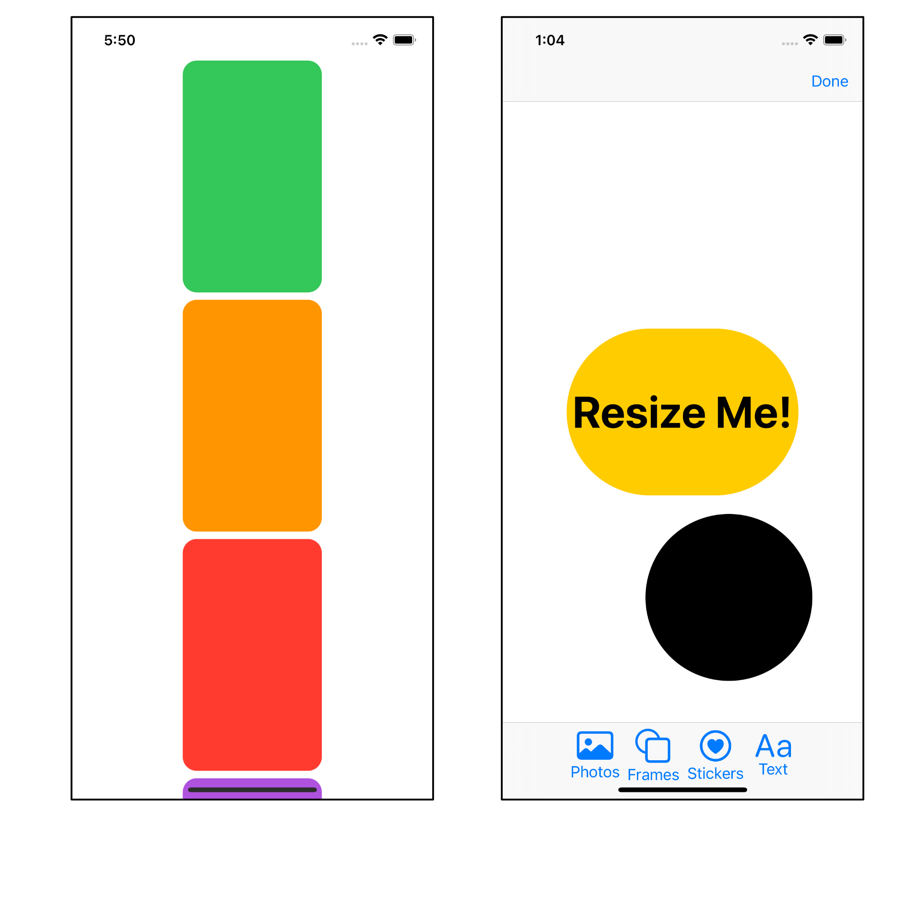
方便的初始化器¶
➤ 打开SingleCardView.swift。
预览不再工作了。这是因为当你在预览中初始化ViewState时，selectedCard是nil，所以视图不会显示。对于这个预览，你必须用selectedCard来初始化ViewState。
所有的类和结构都有一个指定的初始化器。一般来说，这是init()，如果没有什么需要被初始化的，那么你就不必包含它。
在ViewState中，如果你创建一个初始化器。init(card:)，那么这就成为指定的初始化器，每当你初始化ViewState时，你就必须提供一个卡片。这不是你想要的行为。
Swift允许你创建一个方便的初始化器--实际上是一个或多个--调用指定的初始化器，但也可以接受额外的参数。
➤ 打开ViewState.swift并添加初始化器：
convenience init(card: Card) {
self.init()
showAllCards = false
selectedCard = card
}
你拿着一张特定的卡片，使用指定的初始化器来实例化一个ViewState，然后，用你需要的值来填充属性。
初始化器有一个关键字convenience。试着把它关掉，看看当编译器认为这是ViewState的指定初始化器时，你会得到多少个编译错误。
➤ 回到SingleCardView.swift的previews中，将.environmentObject(ViewState())改为：
.environmentObject(ViewState(card: initialCards[0]))
你用方便的初始化器初始化了ViewState，预览现在可以工作了。
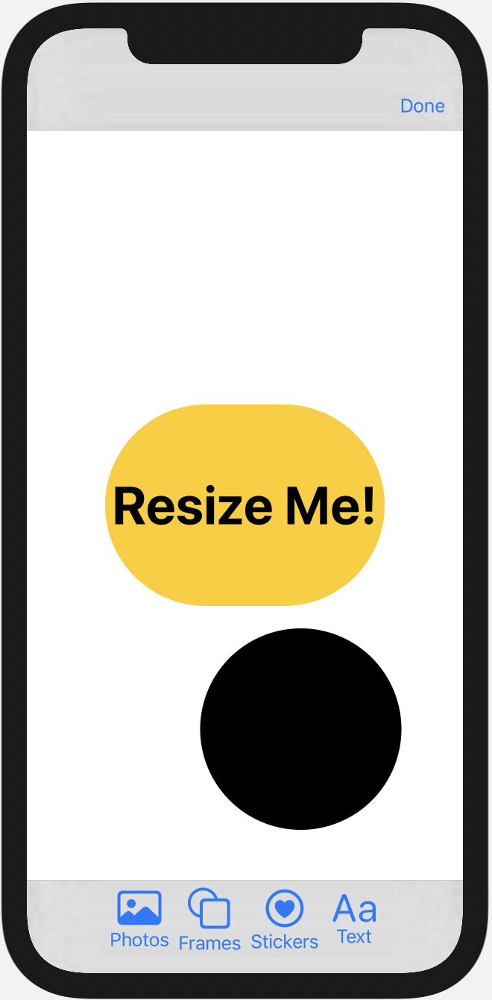
在卡片细节视图中添加元素¶
有了传递给CardDetailView的卡片，现在可以显示卡片的元素。
➤ 在CardDetailView.swift中，用content代替：
var content: some View {
ZStack {
card.backgroundColor
.edgesIgnoringSafeArea(.all)
}
}
这里，你使用卡片上的背景颜色。设备屏幕的安全区域是导航条和工具条可能出现的地方。当你为视图提供背景色时，视图渲染器不会为这些区域着色。你可以通过指定你想忽略安全区域的哪些边缘来覆盖这一点。在这种情况下，您将忽略所有的安全区域，并为整个屏幕着色。
➤ 预览视图，以查看预览数据中第一张卡片的背景颜色。
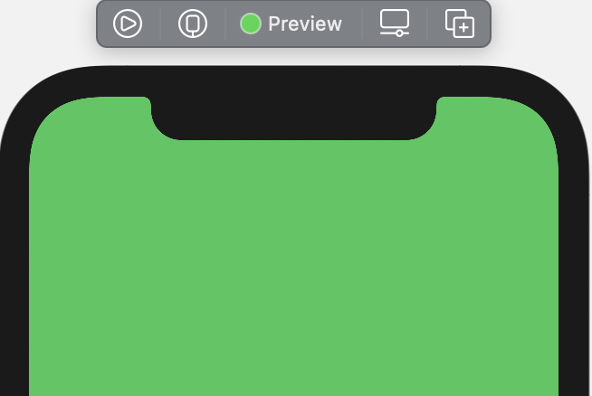
创建卡元素视图¶
➤ 在单卡视图组中，创建一个名为CardElementView.swift的新SwiftUI视图文件。这个视图将显示一个单一的卡片元素。
➤ 在现有的CardElementView下，为图像元素创建一个新的视图：
struct ImageElementView: View {
let element: ImageElement
var body: some View {
element.image
.resizable()
.aspectRatio(contentMode: .fit)
}
}
这只是接收了一个ImageElement并使用存储的图像作为视图。
➤ 为文本创建一个新的视图：
struct TextElementView: View {
let element: TextElement
var body: some View {
if !element.text.isEmpty {
Text(element.text)
.font(.custom(element.textFont, size: 200))
.foregroundColor(element.textColor)
.scalableText()
}
}
}
以同样的方式，这个视图接收了一个TextElement并使用存储的文本、颜色和字体。
Swift
要知道你的设备上有什么字体，首先要在UIFont.familyNames中列出字体家族。一个字体家族可能是Avenir或Gill Sans。对于每个字体家族，你可以用UIFont.fontNames(forFamilyName:)找到字体名称。这些是该家族中可用的重量，比如Avenir-Heavy或GillSans-SemiBold。
scalableText(font:)在你的启动项目中的TextExtensions.swift中，与你在前一章中用于缩放文本的代码相同，重构为一个方法以方便重用。
根据卡片元素是文本还是图像，你将调用这两个视图中的一个。注意在!element.text.isEmpty前面的!。如果text包含""，isEmpty将是true，而!则反转条件结果。这样你就不会为任何空白文本创建一个视图。
以这两个视图为例，当future-you添加一个新的元素类型时，将很容易为该元素专门添加一个新的视图。
➤ 将CardElementView改为此代码：
struct CardElementView: View {
let element: CardElement
var body: some View {
if let element = element as? ImageElement {
ImageElementView(element: element)
}
if let element = element as? TextElement {
TextElementView(element: element)
}
}
}
当看到一个CardElement时，可以根据它的类型找出它是一个图像还是文本。
➤ 将预览改为：
struct CardElementView_Previews: PreviewProvider {
static var previews: some View {
CardElementView(element: initialElements[0])
}
}
这里你展示了第一个元素，它包含一个刺猬图像。要测试文本视图，请将参数改为 initialElements[3]。
➤ 预览该视图。
显示卡片元素¶
➤ 打开CardDetailView.swift，找到var content并在.edgesIgnoringSafeArea(.all)后添加这个：
ForEach(card.elements, id: \.id) { element in
CardElementView(element: element)
.resizableView()
.frame(
width: element.transform.size.width,
height: element.transform.size.height)
}
有了这个ForEach，因为CardElement不符合Identifiable，所以你要指定id。一个协议不能符合另一个协议。然而，一个卡片元素的id总是唯一的，所以你可以使用关键路径.id作为该元素的标识符。
总是要注意你的数据是否是可变的。这里的element是不可变的，但不是传递一个可变的元素，而是在以后的某个时间点更新元素数据。
➤ 预览视图，看到元素都在视图的中心：
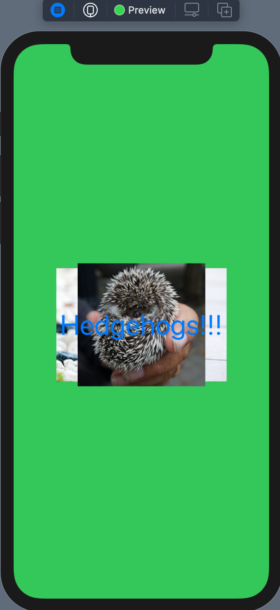
现在你已经完成了CRUD中的R。你的视图从商店中读取并显示所有的数据。现在你将转向U--当你调整大小、移动和旋转卡片元素时更新模型。
了解State和Binding属性包装器¶
本节中你将学习的技能：状态；绑定；泛型
目前，你在ResizableView中使用了一个状态属性transform。你将用一个绑定到当前元素的Transform属性来取代它。
正如你已经了解到的，在View中，所有的属性都是不可改变的，除非它们是用一个特殊的属性包装器创建的。一个状态属性是一块数据的所有者，它是一个真理的来源。绑定将真理之源与改变数据的视图连接起来。
你的所有数据的真相来源是CardStore。当你选择一个特定的卡时，你会把对该卡的绑定传递给SingleCardView。
➤ 打开SingleCardView.swift，找到你调用CardDetailView的地方。选择性地点击card参数以查看声明。
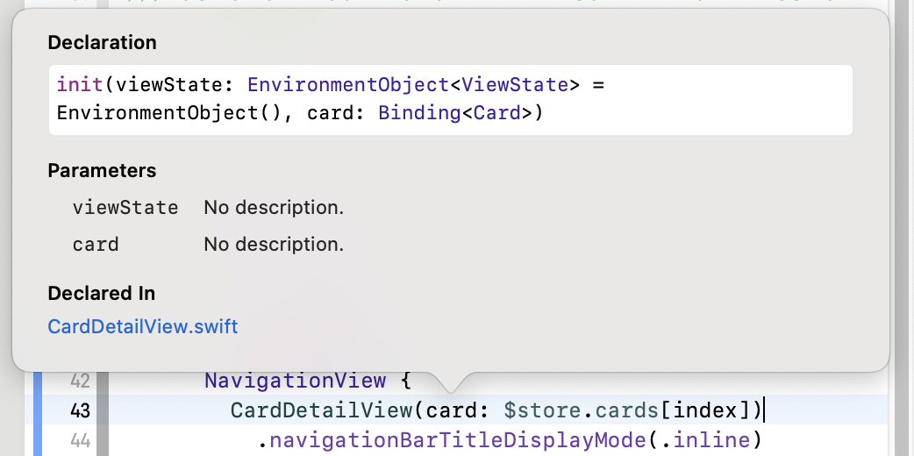
CardDetailView需要一个环境对象和一个绑定。这些对象的类型都在角括号里。viewState是一个ViewState类型的环境对象，card是一个Card类型的绑定。
Swift Dive: 关于泛型的简单介绍¶
Swift是一种强类型语言，这意味着Swift必须理解你声明的所有东西的确切类型。Binding有一个通用类型参数<Value>。除了作为一个占位符，一个通用类型实际上并不存在。当你声明一个绑定时，你会联想到你正在使用的绑定的当前类型。你用你的类型替换了通用术语<Value>，就像上面的例子Binding<Card>。
另一个你可能会发现这种语言结构的常见地方是Array。你在CardStore中定义了一个数组，像这样：
var cards: [Card] = []
这实际上是语法上的糖：
var cards: Array<Card> = []
Array是一个定义为Array<Element>的结构。当你声明一个数组时，你要指定通用类型Element实际上是什么。在这个例子中，Element是一个Card。如果你试图在数组中放入除Card以外的任何东西，你会得到一个编译错误。
绑定转换数据¶
现在你已经看到了泛型在组成绑定声明时是如何工作的，你将能够从CardDetailView中的不可变的卡片元素中提取一个绑定转换。你将把这个变换传递给resizableView()，ResizableView将连接到这个绑定而不是更新它自己的内部状态transform属性。
➤ 打开CardDetailView.swift，在CardDetailView中创建一个新方法：
// 1
func bindingTransform(for element: CardElement)
-> Binding<Transform> {
// 2
guard let index = element.index(in: card.elements) else {
fatalError("Element does not exist")
}
// 3
return $card.elements[index].transform
}
通过这个代码：
bindingTransform(for:)接收一个不可变的元素并返回一个Transform类型的绑定。- 在
card.elements中找到该元素的索引。 - 返回卡片数组中正确元素的绑定变换。
card是这个视图中的一个绑定，并与store环境对象相连，它是真理的来源。
➤ 在content中，找到CardElementView上的修改器resizableView()。
➤ 将resizableView()改为：
.resizableView(transform: bindingTransform(for: element))
你向ResizableView发送当前元素的转换绑定。你会得到一个编译错误，直到你更新了所有的依赖代码。
➤ 打开ResizableView.swift，将@State private var transform = Transform()替换为：
@Binding var transform: Transform
transform现在与父视图中的transform属性相连。
➤ 在ResizableView_Previews中，将.modifier(ResizableView())改为:
.resizableView(transform: .constant(Transform()))
这将传入一个新的转换实例作为绑定。
➤ 打开ViewExtensions.swift，将resizableView()改为：
func resizableView(transform: Binding<Transform>) -> some View {
return modifier(ResizableView(transform: transform))
}
你正在接受一个属于Transform的绑定，并将其传递给视图修改器。你的代码现在应该编译了。
更新CardDetailView的预览¶
CardDetailView的实时预览将不再允许你移动或调整元素的大小。
打开CardDetailView.swift，用下面的代码替换预览：
struct CardDetailView_Previews: PreviewProvider {
struct CardDetailPreview: View {
@State private var card = initialCards[0]
var body: some View {
CardDetailView(card: $card)
.environmentObject(ViewState(card: card))
}
}
static var previews: some View {
CardDetailPreview()
}
}
CardDetailPreview不是一个类型属性，因此允许实例化card和更新变换。随着变换的更新，你现在可以在实时预览中调整元素的大小。
➤ 构建和运行，并选择第一个绿色卡片。你会看到卡的元素现在处于正确的位置。您在位置或大小方面所作的任何更改都将保存到数据存储中。
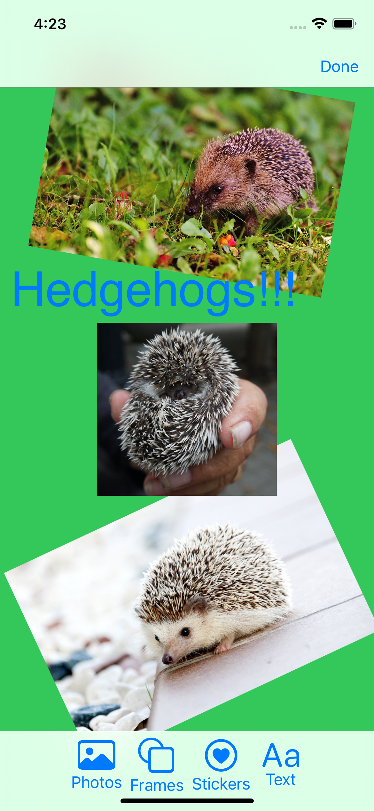
仍然有一个问题。当你第一次重新定位一个元素时，它会跳到不同的位置。
➤ 打开ResizableView.swift，看看dragGesture。
dragGesture依赖于previousOffset被设置为任何现有的偏移。所以在第一次加载视图时，你应该把transform.offset复制到previousOffset。
➤ 为content添加一个新的修改器：
.onAppear {
previousOffset = transform.offset
}
当视图第一次出现时，你初始化previousOffset。这将只发生一次。
➤ 构建和运行并选择第一个卡。在详细视图中，初始位置跳转已经消失，现在可以移动、旋转和调整卡片元素的大小。
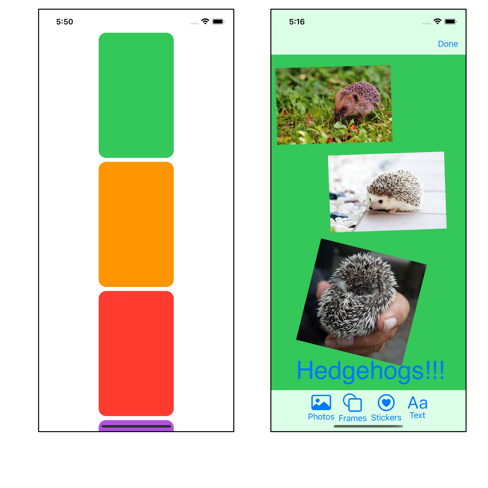
删除¶
本节中你将学习的技能：上下文菜单；删除；从数组中删除
现在你已经实现了CRUD函数中的读取和更新。接下来你将解决删除问题。
你将在卡片和卡片元素上使用contextMenu(menuItems:)修改器来实现。你可以通过长按来激活上下文菜单。然后你的应用程序将从相应的数组中删除所选的卡或卡元素。你将在这里删除卡元素，在本章末尾的挑战中，你将以同样的方式删除一张卡。
➤ 打开Card.swift，将这段代码添加到Card中：
func remove(_ element: CardElement) {
if let index = element.index(in: elements) {
elements.remove(at: index)
}
}
在这里，你检索了卡片元素的索引。然后使用该索引从数组中删除该元素。
➤ 构建应用程序，你会得到一个编译错误："不能对不可变的值使用变异成员：self是不可变的"。尽管你用一个var创建了elements，但对于Card内部的任何方法，属性都是不可变的。
幸运的是，你所要做的就是告诉编译器，你确实想改变其中的一个属性，把这个方法标记为mutating。
➤ 把方法的标题改成这样：
mutating func remove(_ element: CardElement) {
你的应用程序现在应该编译了。
➤ 打开CardDetailView.swift并找到 var content。
➤ 为CardElementView(element:)添加一个新的修改器。因为现有的修改器会改变元素的变换，所以这个修改器必须是修改器列表中的第一个。(稍后，试着把它放在其他修改器之后，看看会发生什么。）
.contextMenu {
Button(action: { card.remove(element) }) {
Label("Delete", systemImage: "trash")
}
}
当你长按一个卡片元素时，这个上下文菜单会弹出。在一个上下文菜单中可以有多个按钮，但你的菜单只有一个，在Delete旁边有trash SFSymbol。
➤ 构建和运行，选择第一个卡，长按一个元素。你会看到弹出的上下文菜单。点删除来删除这个元素，如果你决定不删除它，就点离开菜单。
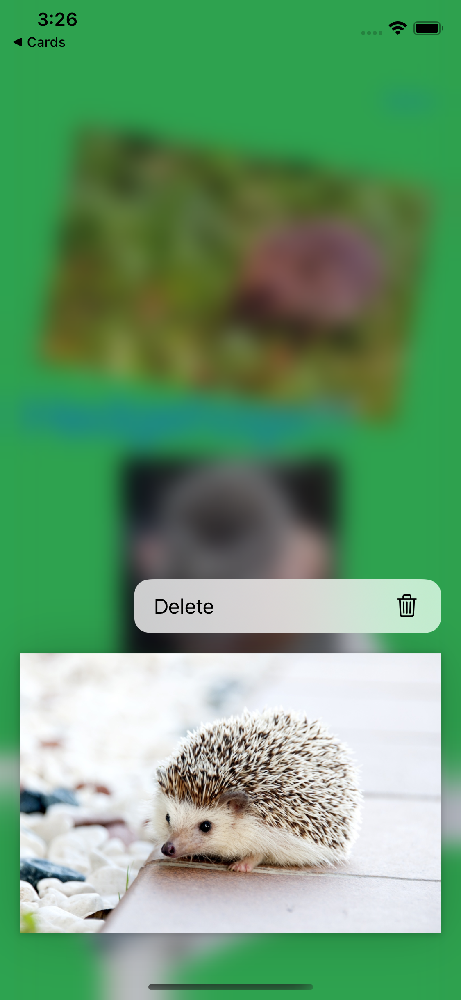
当你删除这个元素时，你是从card.elements中删除。card在数据存储中被绑定到cards，cards是一个已发布的属性。因此所有包含cards的视图将重新显示其内容。
挑战¶
挑战：删除一个卡片¶
你已经学会了如何删除一个卡片元素并将其从卡片元素数组中删除。在这个挑战中，你将添加一个上下文菜单，以便你可以删除卡片。
- 在
CardStore中，创建一个与Card类似的删除方法，从卡片数组中删除一张卡片。
Swift
当使用类时，你不要在方法中加入mutating。在一个类中，所有用var声明的属性都是可变的。
- 在
CardsListView中，为一个卡片添加一个新的上下文菜单，其中有一个删除选项，调用你的新方法来删除该卡片。
你可以在本章的挑战文件夹中找到这个挑战的解决方案。
关键点¶
- 在你的应用程序中几乎只使用值类型。然而，对于持久性的存储数据，请使用引用类型。当你创建一个值类型时，你总是在复制数据。你的存储数据应该在你的应用程序中的一个中心位置，所以你不应该复制它。偶尔，苹果的
API会要求你使用一个类，所以你别无选择。 - 在设计数据模型时，尽可能使其灵活，允许在未来的应用程序发布中使用新功能。
- 使用协议来描述数据行为。与本章中的做法相比，另一种方法是要求所有可调整大小的
View都有一个transform属性。你可以创建一个Transformable协议，并要求transform。任何可调整大小的视图都必须符合这个协议。 - 在本章中，你对泛型有一个简单的介绍。泛型在苹果的
API中无处不在，也是Swift如此灵活的原因之一，尽管它是强类型的。留意苹果在哪些方面使用了泛型，这样你就可以逐渐熟悉它们。 - 在设计一个应用程序时，要考虑如何实现
CRUD。在本章中，你实现了读取、更新和删除。添加新的数据总是比较困难的，因为你通常需要一个特殊的按钮，可能还需要一个特殊的视图。稍后你将从你的照片集中添加照片到你的卡片上。
从这里出发¶
在本章中，你涵盖了很多Swift理论。我们团队编写的《Swift学徒》https://bit.ly/3eFtqQa一书包含了更多关于如何以及何时使用值和引用类型的信息。它还包括泛型和面向协议的编程。
如果你仍然对何时使用类的继承和OOP感到困惑，请看这个经典的WWDC视频https://apple.co/3k9GUEM，主人公Crusty坚定地表示"我不做面向对象"。